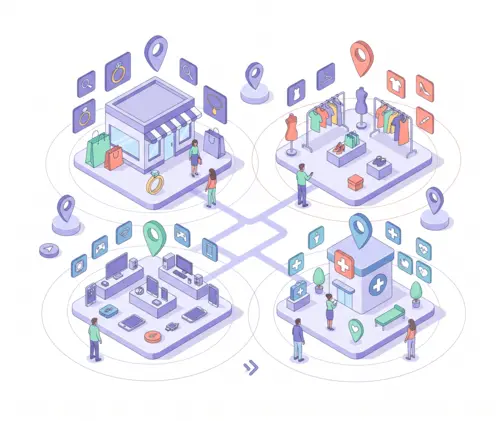

Retail decisions are increasingly shaped by proximity and convenience.
Customers explore options in real time, often selecting brands that are easiest to discover, evaluate, and access within their immediate surroundings.
For enterprises, this introduces a new layer of complexity: ensuring consistency at scale while remaining locally relevant.
Bridging the Gap Between Digital Presence and Physical Outcomes
While brands have invested in digital infrastructure, a key disconnect remains.
This results in missed opportunities where intent exists, but conversion does not follow.
-
Discovery does not always translate
Online discovery does not always translate into store visits
-
Visibility varies by location
Local visibility varies significantly across locations within the same network
-
Performance is hard to measure
Performance is difficult to assess at a granular, store-level

Our approach introduces a structured, location-first layer to your digital ecosystem. Each store is treated as an independent point of engagement, while remaining aligned with central strategy and brand governance.
Consistent representation across all locations
Context-aware engagement closer to the customer
Greater control over distributed performance
Designed to Operate as a Unified System
The platform integrates multiple capabilities into a single, continuous workflow.
Ensuring accuracy, consistency, and discoverability across digital touchpoints
Supporting timely and relevant interaction across channels
Providing store-level insights across key indicators such as discovery, interaction, and intent
Continuously refining visibility and engagement through data-driven adjustments
From Fragmented Efforts to Measurable Outcomes
By aligning local discovery with enterprise strategy, organizations can achieve:
Improved consistency across locations, ensuring every store presents a unified brand experience
Stronger customer engagement within local markets through relevant, proximity-driven interactions
Increased contribution from digital to in-store performance, closing the gap between online discovery and physical visits
Clearer visibility into what drives results at a store level, enabling more informed decisions
Structured for Multi-Location Complexity
The platform is designed to support businesses operating across diverse geographies and store networks.
Centralized oversight with decentralized execution, giving corporate teams full visibility while empowering local operators.
Scalable deployment across hundreds of locations without proportional increases in operational overhead.
Alignment between corporate strategy and local performance, ensuring every store contributes to broader business goals.

Relevant Across Location-Driven Industries
This capability is particularly valuable for sectors where proximity influences decision-making.
- Retail and jewellery - where local trust and in-store experience drive purchase decisions
- Fashion and lifestyle - where customers seek nearby options before buying
- Consumer electronics - where customers compare and verify availability before visiting
- Healthcare and service networks - where location proximity is a primary filter in the decision process
Enabling Smarter Local Growth
As customer behavior becomes more immediate and location-driven, the ability to operate effectively at a local level becomes a strategic advantage.
We help enterprises build that capability: systematically, intelligently, and at scale.
Connect With Us